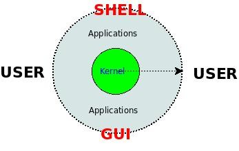

到最後一節來寫“開篇”，確實有點古怪。不過，在第一篇（數值操作）的開頭實際上也算是一個小的開篇，那裡提到整個系列的前提是需要有一定的 Shell 編程基礎，因此，為了能夠讓沒有 Shell 編程基礎的讀者也可以閱讀這個系列，我到最後來重寫這個開篇。開篇主要介紹什麼是 Shell，Shell 運行環境，Shell 基本語法和調試技巧。
首先讓我們從下圖看看 Shell 在整個操作系統中所處的位置吧，該圖的外圓描述了整個操作系統（比如 Debian/Ubuntu/Slackware 等），內圓描述了操作系統的核心（比如 Linux Kernel），而 Shell 和 GUI 一樣作為用戶和操作系統之間的接口。

GUI 提供了一種圖形化的用戶接口，使用起來非常簡便易學；而 Shell 則為用戶提供了一種命令行的接口，接收用戶的鍵盤輸入，並分析和執行輸入字符串中的命令，然後給用戶返回執行結果，使用起來可能會複雜一些，但是由於佔用的資源少，而且在操作熟練以後可能會提高工作效率，而且具有批處理的功能，因此在某些應用場合還非常流行。
Shell 作為一種用戶接口，它實際上是一個能夠解釋和分析用戶鍵盤輸入，執行輸入中的命令，然後返回結果的一個解釋程序（Interpreter，例如在 linux 下比較常用的 Bash），我們可以通過下面的命令查看當前的 Shell ：
$ echo $Shell
/bin/bash
$ ls -l /bin/bash
-rwxr-xr-x 1 root root 702160 2008-05-13 02:33 /bin/bash
該解釋程序不僅能夠解釋簡單的命令，而且可以解釋一個具有特定語法結構的文件，這種文件被稱作腳本（Script）。它具體是如何解釋這些命令和腳本文件的，這裡不深入分析，請看我在 2008 年寫的另外一篇文章：《Linux命令行上程序執行的一剎那》。
既然該程序可以解釋具有一定語法結構的文件，那麼我們就可以遵循某一語法來編寫它，它有什麼樣的語法，如何運行，如何調試呢？下面我們以 Bash 為例來討論這幾個方面。
為了方便後面的練習，我們先搭建一個基本運行環境：在一個 Linux 操作系統中，有一個運行有 Bash 的命令行在等待我們鍵入命令，這個命令行可以是圖形界面下的 Terminal （例如 Ubuntu 下非常厲害的 Terminator），也可以是字符界面的 Console （可以用 CTRL+ALT+F1~6 切換），如果你發現當前 Shell 不是 Bash，請用下面的方法替換它：
$ chsh $USER -s /bin/bash
$ su $USER
或者是簡單地鍵入Bash：
$ bash
$ echo $Shell # 確認一下
/bin/bash
如果沒有安裝 Linux 操作系統，也可以考慮使用一些公共社區提供的 Linux 虛擬實驗服務，一般都有提供遠程 Shell，你可以通過 Telnet 或者是 Ssh 的客戶端登錄上去進行練習。
有了基本的運行環境，那麼如何來運行用戶鍵入的命令或者是用戶編寫好的腳本文件呢 ?
假設我們編寫好了一個 Shell 腳本，叫 test.sh 。
第一種方法是確保我們執行的命令具有可執行權限，然後直接鍵入該命令執行它：
$ chmod +x /path/to/test.sh
$ /path/to/test.sh
第二種方法是直接把腳本作為 Bash 解釋器的參數傳入：
$ bash /path/to/test.sh
或
$ source /path/to/test.sh
或
$ . /path/to/test.sh
先來一個 Hello, World 程序。
下面來介紹一個 Shell 程序的基本結構，以 Hello, World 為例：
#!/bin/bash -v
# test.sh
echo "Hello, World"
把上述代碼保存為 test.sh，然後通過上面兩種不同方式運行，可以看到如下效果。
方法一：
$ chmod +x test.sh
$ ./test.sh
./test.sh
#!/bin/bash -v
echo "Hello, World"
Hello, World
方法二：
$ bash test.sh
Hello, World
$ source test.sh
Hello, World
$ . test.sh
Hello, World
我們發現兩者運行結果有區別，為什麼呢？這裡我們需要關注一下 test.sh 文件的內容，它僅僅有兩行，第二行打印了 Hello, World，兩種方法都達到了目的，但是第一種方法卻多打印了腳本文件本身的內容，為什麼呢？
原因在該文件的第一行，當我們直接運行該腳本文件時，該行告訴操作系統使用用#! 符號之後面的解釋器以及相應的參數來解釋該腳本文件，通過分析第一行，我們發現對應的解釋器以及參數是 /bin/bash -v，而 -v 剛好就是要打印程序的源代碼；但是我們在用第二種方法時沒有給 Bash 傳遞任何額外的參數，因此，它僅僅解釋了腳本文件本身。
其他語法細節請直接看《Shell編程學習筆記》即本書後面的附錄一。
Shell 語言作為解釋型語言，它的程序設計過程跟編譯型語言有些區別，其基本過程如下：
可見它沒有編譯型語言的"麻煩的"編譯和鏈接過程，不過正是因為這樣，它出錯時調試起來不是很方便，因為語法錯誤和邏輯錯誤都在運行時出現。下面我們簡單介紹一下調試方法。
可以直接參考資料：Shell 腳本調試技術 或者 BASH 的調試手段。
Shell 語言作為一門解釋型語言，可以使用大量的現有工具，包括數值計算、符號處理、文件操作、網絡操作等，因此，編寫過程可能更加高效，但是因為它是解釋型的，需要在執行過程中從磁盤上不斷調用外部的程序並進行進程之間的切換，在運行效率方面可能有劣勢，所以我們應該根據應用場合選擇使用 Shell 或是用其他的語言來編程。